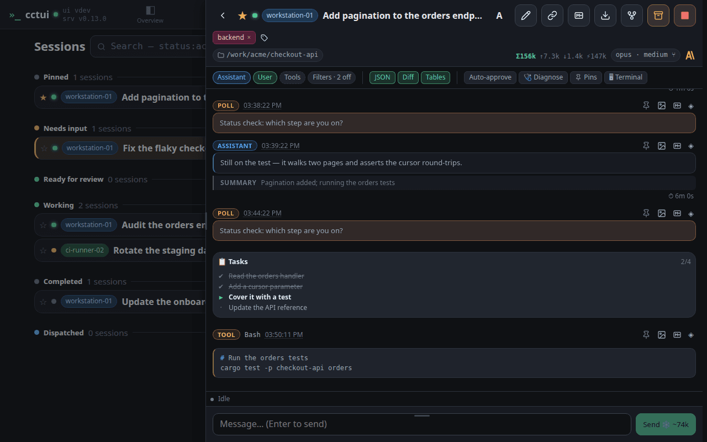
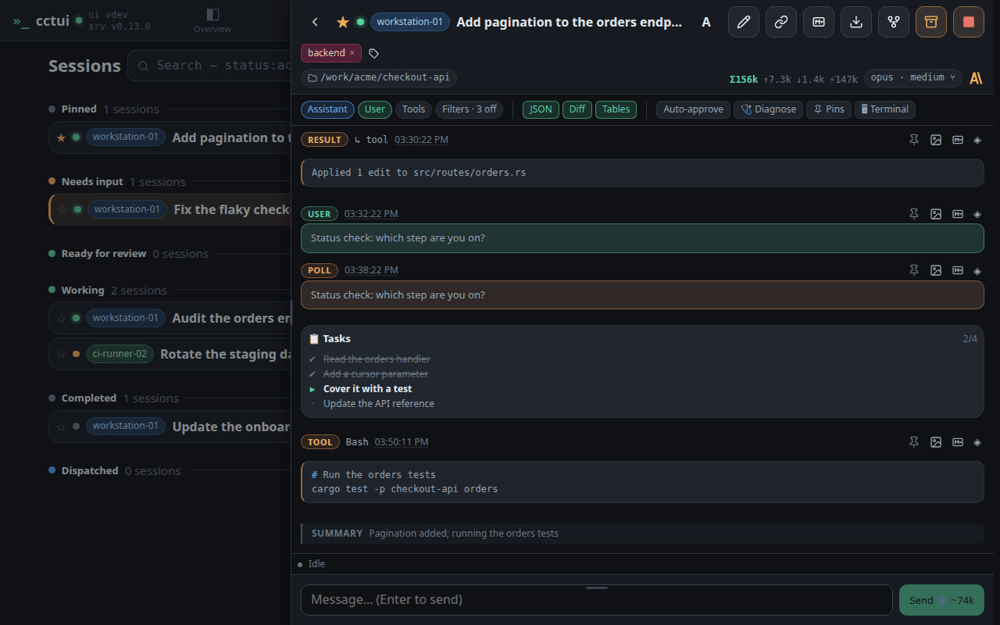
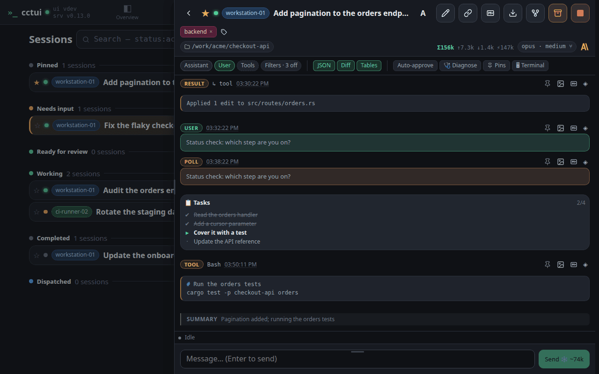
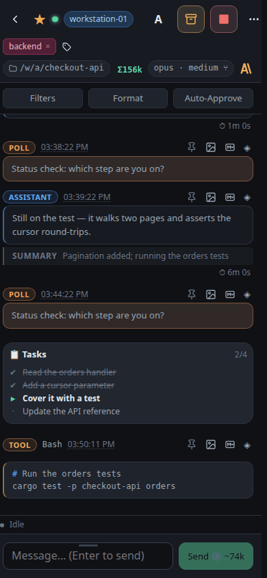
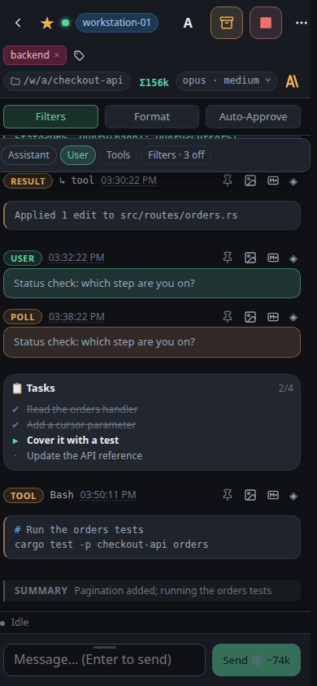

Open a session Open one by its name. The conversation slides in beside the list on a desktop and over it on a phone, so you never lose your place in the fleet.

Who is running this, and where The top row answers the questions you ask first: is it alive, which machine is it on, which account is paying for it, and what is it called.Everything it did is on the record Each message is badged with its kind: your prompts, the agent’s replies, its reasoning, every tool call and the result that came back. Nothing is summarised away.Lift one message out Any single message can be pinned to find again, copied as Markdown for a ticket, or saved as an image to paste into a review.

Hide the noise Hiding the assistant messages leaves the tool calls — the fastest way to audit what an agent touched.

Steer it from here Anything you type goes to the running agent, so you can redirect it mid-task instead of stopping it and starting again.
viewport=mobile theme=dark
Open a session Open one by its name. The conversation slides in beside the list on a desktop and over it on a phone, so you never lose your place in the fleet.Who is running this, and where The top row answers the questions you ask first: is it alive, which machine is it on, which account is paying for it, and what is it called.Everything it did is on the record Each message is badged with its kind: your prompts, the agent’s replies, its reasoning, every tool call and the result that came back. Nothing is summarised away.

Lift one message out Any single message can be pinned to find again, copied as Markdown for a ticket, or saved as an image to paste into a review.Hide the noise Hiding the assistant messages leaves the tool calls — the fastest way to audit what an agent touched.

Steer it from here Anything you type goes to the running agent, so you can redirect it mid-task instead of stopping it and starting again.